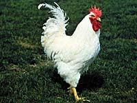
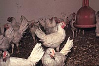

Chickens
The domestic chicken is a descendant of one or more types of Asian jungle fowl. It is thought that the original interest in them may have been for entertainment through cock-fighting, only later to be recognized as a source for meat and eggs. Archaeological records from India indicate domestication approximately 2000-3000 B.C. From India, domestic fowl then spread throughout Europe and Asia. It is not known if they were introduced to South America by Pacific Islanders, or later through the Europeans. Chickens are now the most common domestic animal, estimated at 5 billion animals worldwide.
Chickens are natural scavengers, making them suitable animals for backyards production, scavenging and eating kitchen wastes. This type of farming is important in many countries, but has been overtaken in North America by intensive farming practices. As North America moved into intensive, highly mechanized grain farming, the availability of high quality concentrate feeds allowed large scale intensive poultry operations to be built.
There are few distinct breeds of chickens remaining in commercial poultry production. Although distinct breeds do still exist, they are not used in large scale operations. Today, poultry are classified as either meat producing or egg producing varieties. The genetic distinctions are a result of complex breeding programs used by primary breeding companies.

1. Egg Producing Chickens (layers)
The leghorn is the most popular basis for egg laying varieties of chickens. This variety originally came from Italy. Most varieties today are developed in England, Denmark, or America. The leghorn was first brought to America in the 1840's. There are two varieties; the single comb, and the rose combed leghorn. Mature male leghorns weigh between 2.3 and 2.7 kilograms while females weigh between 1.8 and 2 kilograms. The leghorn is usually white in colour and is used as the basis for 75% of all egg laying stock in Canada. Egg producing chickens have been bred
for maximum egg production rather than meat yield, and can produce
up to 300 eggs per year.
2. Meat Producing Chickens (broilers, roasters)
Dual purpose chickens are often raised
in small flocks for both meat and egg production. While layers are usually light-bodied chickens, meat producing varieties are heavily muscled and noted for rapid and efficient growth. As with egg laying varieties, the genetic lines of meat producing chickens are carefully controlled by primary breeding companies. These birds are commonly based on a crossbreed involving the Cornish breed. Mature male birds can weigh between 2.6 and 6.4 kilograms, however, they are commonly slaughtered before they reach maturity. By 6 weeks of age, they can reach weights averaging 2 kilograms, and by 8 weeks of age they can exceed 3.6 kilograms.
The
hens will produce 200-250 eggs per year. Available breeds include
Rhode Island Red crossed with Barred Rock, Columbian Rock, or
Light Sussex. These hens usually produce brown eggs.
|